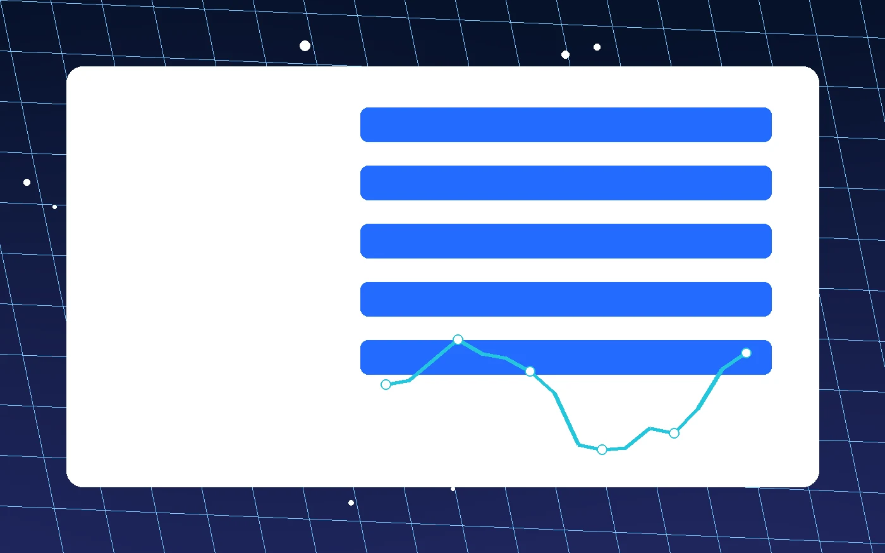

FAQ
常见问题与故障排查
加速器排查要从线路、设备、权限、版本和下载入口几个角度看，不把所有异常都归到节点。

一般不需要。若应用本身检测到网络出口变化，可能要求重新验证，这属于应用侧的安全策略。
不一定。单次测速只能说明当时的响应，长时间波动、丢包提示和当前网络质量也要一起看。
先看连接状态是否重建，再检查节点是否仍适合当前网络；必要时手动切换线路。
正常运行时占用应保持平稳。若发现异常耗电或连接反复断开，可以先重启客户端并查看故障提示。
不能。它处理的是连接路径与节点匹配，路由器故障、运营商中断或应用账号问题仍需单独排查。
如果设备里有自定义线路、常用节点或特殊代理设置，更新前记录一下更稳妥。
无线信号、基站切换、路由拥塞都会影响链路，客户端会根据状态尝试重新建立连接。
可以稍后再试，或先检查浏览器拦截、系统时间和网络出口。加速器下载入口统一从版本获取页进入。
晚间家庭宽带和公共网络更容易拥挤，节点本身也可能承受更多连接，需要结合趋势判断。
不需要。除非遇到异常提示、系统升级或网络入口变化，日常保持常用配置即可。
先查看系统设置里的网络或 VPN 权限，必要时重启客户端再触发授权。
公开按钮统一进入中转页，方便维护同一个目标，不把地址复制到多个文件。